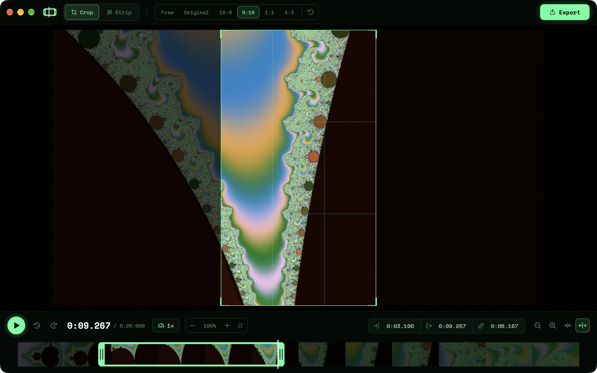

Trim, crop and cut dead time from a video. Nothing else to learn.
DownloadApple silicon build. Intel Mac? Get the Intel one.
Free and open source. For
$ du -sh /Applications/*
$

Drag the box, or snap to 16:9, 9:16, 1:1 or 4:3.
Drag the edges of the trim box on the filmstrip, down to a single frame.
Finds the stretches where nothing moves and cuts them out.
0.25× to 4×, with pitch-corrected audio.
A plain trim saves in seconds, without re-encoding.
Shrink a clip for sharing and see how much smaller it got.
First launch: if macOS says the app can't be checked, open System Settings → Privacy & Security and click Open Anyway.
One file, nothing to install. If SmartScreen stops it, click More info → Run anyway.